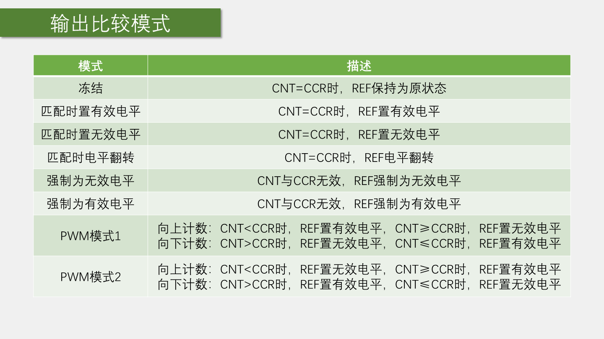
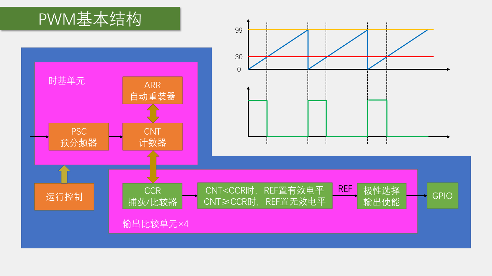
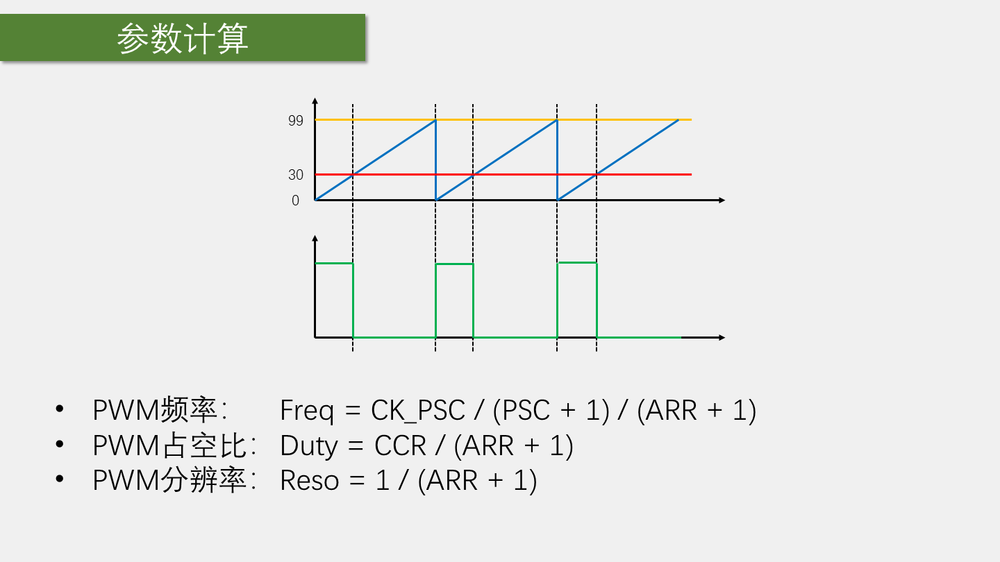

这一课要解决的问题
本课目标
读完你能：画出 CNT 与 CCR 比较产生 PWM 的波形；由目标频率和占空比算出 PSC/ARR/CCR；做出一个平滑的呼吸灯；说清 50Hz 舵机和 20kHz 电机各需要什么参数、为什么不能直接接 IO。
上一课定时器"数到 ARR 就报告一声"。这一课让它"数到 CCR 就翻个身"——同一个计数器，多个比较值，就能输出方波。
1. 从定时器到 PWM：只多了一个比较器
s9 的结构是：CNT 数到 ARR → 清零 + 产生更新事件。
现在加一条：CNT 每时每刻都在和 CCR 比较。
- CNT < CCR → 输出有效电平
- CNT ≥ CCR → 输出无效电平
于是输出就是一个方波：一个周期内，前一段是有效电平，后一段是无效电平。
两个公式（和 s9 的公式一起背）
注意分母是 ARR+1，因为一个周期包含 0~ARR 共 ARR+1 个计数值。
- CCR = 0 → 占空比 0%（一直无效电平）
- CCR = ARR+1 → 超过 100%，实际输出恒为有效电平
- CCR = (ARR+1)/2 → 50%
CCR 改了不生效？看预装载
和 s9 的 ARR 一样，CCR 也有影子寄存器，由 OCxPE 位控制。
文件：Core/Src/tim.c 的 MX_TIM2_Init()（CubeMX 生成，不用手写）
void MX_TIM2_Init(void)
{
TIM_ClockConfigTypeDef sClockSourceConfig = {0};
TIM_MasterConfigTypeDef sMasterConfig = {0};
TIM_OC_InitTypeDef sConfigOC = {0};
htim2.Instance = TIM2;
htim2.Init.Prescaler = 71; /* 72 分频：72MHz → 1MHz */
htim2.Init.CounterMode = TIM_COUNTERMODE_UP;
htim2.Init.Period = 999; /* ARR：1MHz / 1000 = 1kHz */
htim2.Init.ClockDivision = TIM_CLOCKDIVISION_DIV1;
htim2.Init.AutoReloadPreload = TIM_AUTORELOAD_PRELOAD_ENABLE;
if (HAL_TIM_Base_Init(&htim2) != HAL_OK) { Error_Handler(); }
sClockSourceConfig.ClockSource = TIM_CLOCKSOURCE_INTERNAL;
if (HAL_TIM_ConfigClockSource(&htim2, &sClockSourceConfig) != HAL_OK) { Error_Handler(); }
if (HAL_TIM_PWM_Init(&htim2) != HAL_OK) { Error_Handler(); }
sMasterConfig.MasterOutputTrigger = TIM_TRGO_RESET;
sMasterConfig.MasterSlaveMode = TIM_MASTERSLAVEMODE_DISABLE;
if (HAL_TIMEx_MasterConfigSynchronization(&htim2, &sMasterConfig) != HAL_OK) { Error_Handler(); }
sConfigOC.OCMode = TIM_OCMODE_PWM1; /* PWM 模式 1 */
sConfigOC.Pulse = 0; /* 上电占空比 0 */
sConfigOC.OCPolarity = TIM_OCPOLARITY_LOW; /* 共阳极 LED，低电平点亮 */
sConfigOC.OCFastMode = TIM_OCFAST_DISABLE; /* 关快速模式，否则绕过预装载 */
sConfigOC.OCPreload = TIM_OC_PRELOAD_ENABLE; /* CCR 预装载：下个周期才生效 */
if (HAL_TIM_PWM_ConfigChannel(&htim2, &sConfigOC, TIM_CHANNEL_1) != HAL_OK) { Error_Handler(); }
HAL_TIM_MspPostInit(&htim2); /* 把 PA0 配成复用推挽，实现在 hal_msp.c */
}
开预装载后，__HAL_TIM_SET_COMPARE() 写的值会在下个周期生效，波形平滑；不开则立即生效，可能在一个周期中间产生毛刺。
调 PWM 一律开预装载。
2. PWM 模式 1 和模式 2，到底差在哪
| 模式 | 规则 | 效果 |
|---|---|---|
| PWM 1 | CNT < CCR 时输出有效电平 | CCR 越大，有效电平越长 |
| PWM 2 | CNT < CCR 时输出无效电平 | 和模式 1 反相 |
再叠加一个"极性"（Polarity）：
| 极性 | 有效电平是 |
|---|---|
| High | 高电平 |
| Low | 低电平 |
四种组合其实是两种波形：
- 模式 1 + 极性 High = 模式 2 + 极性 Low
- 模式 1 + 极性 Low = 模式 2 + 极性 High
为什么蓝板 LED 要选"极性 Low"
蓝板 LED 是共阳极，低电平点亮（s3 讲过）。
如果用默认的"模式 1 + 极性 High"，CCR = 500 时输出 50% 高电平 → LED 是 50% 时间熄灭，占空比越大反而越暗。
两种改法：
- 保持模式 1、极性 High，代码里写
CCR = ARR+1 - 目标值（反着算，容易搞混）。 - 配成极性 Low，这样
CCR直接就是"点亮时间占比"，符合直觉。
推荐第 2 种：配置一次，代码永远直观。
3. 呼吸灯：慢速调占空比
原理很朴素：让占空比从 0 缓慢增长到 100%，再从 100% 降回 0，循环。
呼吸灯是"业务"（多久变一次、变多少），放 App/；main.c 只负责启动 PWM 和每圈调用一次任务。这样以后在同一个主循环里加按键、加串口，不用把呼吸灯的代码挪来挪去。
| 文件 | 文件夹 | 作用 |
|---|---|---|
breath.h |
App/Inc/ |
Breath_Init / Breath_Task、占空比计数宏 |
breath.c |
App/Src/ |
每 5ms 调一次 CCR，到顶/到底换方向 |
main.c |
Core/Src/ |
初始化、HAL_TIM_PWM_Start、主循环 |
main.h、tim.c、gpio.c、stm32f1xx_hal_msp.c |
Core/ |
CubeMX 生成（PSC/ARR/通道/极性、PA0 复用），不手写 |
文件：App/Inc/breath.h
#ifndef __BREATH_H
#define __BREATH_H
#ifdef __cplusplus
extern "C" {
#endif
#include "main.h"
/* TIM2 的 ARR = 999，一个周期共 1000 个计数。
* 所以 duty 取值 0~1000 正好对应 0%~100%（分母是 ARR+1 = 1000）。 */
#define BREATH_ARR 1000U
void Breath_Init(void); /* 占空比清零，方向设为变亮 */
void Breath_Task(void); /* 主循环每圈调用，内部按 5ms 节拍推进 */
extern volatile uint16_t g_duty; /* 当前 CCR 值，调试器里看 */
#ifdef __cplusplus
}
#endif
#endif /* __BREATH_H */
文件：App/Src/breath.c
#include "breath.h"
#include "tim.h" /* htim2 的 extern 声明 */
volatile uint16_t g_duty = 0;
static int32_t s_step = 8; /* 每 5ms 变 8/1000 ≈ 0.8%，单程约 625ms */
static uint32_t s_last = 0; /* 上次推进的时刻 */
void Breath_Init(void)
{
g_duty = 0;
s_step = 8;
__HAL_TIM_SET_COMPARE(&htim2, TIM_CHANNEL_1, g_duty);
}
void Breath_Task(void)
{
uint32_t now = HAL_GetTick();
if (now - s_last < 5U) return; /* 没到 5ms 就返回，主循环不阻塞 */
s_last = now;
int32_t d = (int32_t)g_duty + s_step;
if (d >= (int32_t)BREATH_ARR) { d = BREATH_ARR; s_step = -8; } /* 到顶，改为变暗 */
if (d <= 0) { d = 0; s_step = 8; } /* 到底，改为变亮 */
g_duty = (uint16_t)d;
__HAL_TIM_SET_COMPARE(&htim2, TIM_CHANNEL_1, g_duty);
}
文件：Core/Src/main.c
#include "main.h"
#include "gpio.h"
#include "tim.h" /* htim2 */
#include "breath.h"
void SystemClock_Config(void);
int main(void)
{
HAL_Init();
SystemClock_Config();
MX_GPIO_Init();
MX_TIM2_Init(); /* PSC/ARR/通道参数都在里面，生成代码 */
HAL_TIM_PWM_Start(&htim2, TIM_CHANNEL_1);/* 纯硬件输出，不用 _IT 版本 */
Breath_Init();
while (1)
{
Breath_Task(); /* 非阻塞：每次只做一点，立刻返回 */
}
}
/* 以下两个函数是 CubeMX 生成的固定内容，不用你手写 */
void SystemClock_Config(void)
{
RCC_OscInitTypeDef osc = {0};
RCC_ClkInitTypeDef clk = {0};
osc.OscillatorType = RCC_OSCILLATORTYPE_HSE;
osc.HSEState = RCC_HSE_ON;
osc.HSEPredivValue = RCC_HSE_PREDIV_DIV1;
osc.PLL.PLLState = RCC_PLL_ON;
osc.PLL.PLLSource = RCC_PLLSOURCE_HSE;
osc.PLL.PLLMUL = RCC_PLL_MUL9; /* 8MHz × 9 = 72MHz */
if (HAL_RCC_OscConfig(&osc) != HAL_OK) { Error_Handler(); }
clk.ClockType = RCC_CLOCKTYPE_HCLK | RCC_CLOCKTYPE_SYSCLK
| RCC_CLOCKTYPE_PCLK1 | RCC_CLOCKTYPE_PCLK2;
clk.SYSCLKSource = RCC_SYSCLKSOURCE_PLLCLK;
clk.AHBCLKDivider = RCC_SYSCLK_DIV1;
clk.APB1CLKDivider = RCC_HCLK_DIV2; /* TIM2 时钟 72MHz */
clk.APB2CLKDivider = RCC_HCLK_DIV1;
if (HAL_RCC_ClockConfig(&clk, FLASH_LATENCY_2) != HAL_OK) { Error_Handler(); }
}
void Error_Handler(void)
{
__disable_irq();
while (1) { }
}
假设 ARR = 999，duty 从 0 到 1000 正好覆盖 0%~100%（分母是 ARR+1 = 1000，所以这里写 1000 而不是 999）。每 5ms 变 8，单程约 625ms，一个完整呼吸周期约 1.25 秒。
为什么用时间戳而不是 HAL_Delay(5)：HAL_Delay 让主循环 5ms 什么都干不了；用 HAL_GetTick() 只在到点时改一次 CCR，其余时间主循环可以扫按键、收串口（s6 的框架）。视觉上完全一样，但后面加功能不用重写。
为什么不用定时中断改 CCR：PWM 本身就是硬件在输出，CPU 只在"改亮度"这一刻介入；若开一个 5ms 定时中断，每秒多 200 次进出，纯属浪费。主循环轮询时间戳已经足够准。
为什么占空比变量用 01000 而不是 0999：CCR 的分母是 ARR+1=1000，这样 1000 恰好是 100%；写成 999 的话永远到不了满亮度，而且"百分比 × 10"的心算也对不上。
哪些没写：htim2、MX_TIM2_Init()、HAL_TIM_PWM_MspInit()（开 TIM2 时钟，在 stm32f1xx_hal_msp.c）、HAL_TIM_MspPostInit()（把 PA0 配成复用推挽）都由 CubeMX 生成，手写只会和生成代码重复定义。
为什么看着"不线性"
人眼对亮度的感知是非线性的（近似幂函数）。占空比线性增长时，前 30% 的变化看起来很明显，后 30% 几乎看不出差别。
想让它看起来均匀，可以对占空比做伽马校正：
文件：App/Src/breath.c 的 Breath_Task() 末尾（替换那行 SET_COMPARE，并 #include <math.h>）
uint32_t ccr = (uint32_t)(BREATH_ARR * powf(g_duty / (float)BREATH_ARR, 2.2f)); /* 2.2 是常用伽马值 */
__HAL_TIM_SET_COMPARE(&htim2, TIM_CHANNEL_1, ccr); /* 写校正后的值 */
代价是要引入 math.h 和浮点运算（M3 没有 FPU，比较慢）。简单办法是用一张 32 项的查表，效果差不多还快。
产品里都做校正，实验里先线性，知道这件事就够了。
呼吸灯必须用能 PWM 的引脚
PC13 不能输出 PWM——它没有连接到任何定时器通道。
能用的引脚要看"复用功能表"，比如：
- PA0 = TIM2_CH1
- PA1 = TIM2_CH2
- PA6 = TIM3_CH1
- PA7 = TIM3_CH2
- PA8 = TIM1_CH1
所以呼吸灯要外接一个 LED 到 PA0（共阳极接 3.3V，串 470Ω，另一端接 PA0），不能用板载那个 PC13。
4. CubeMX 配置
4.1 定时器参数
Timers → TIM2：
| 配置项 | 值 | 计算 |
|---|---|---|
| Clock Source | Internal Clock | 72MHz |
| Prescaler | 71 | 72 分频 → 1MHz |
| Counter Mode | Up | — |
| Counter Period (ARR) | 999 | 1MHz / 1000 = 1kHz |
| auto-reload preload | Enable | 改 ARR 平滑 |
用公式验证：
为什么选 1kHz：高于 100Hz 人眼就看不出闪烁了，1kHz 绰绰有余；同时 1000 级的精度让占空比可以调得很细（步进 0.1%）。
4.2 通道配置
TIM2 → Channel1 选 PWM Generation CH1，然后下面 Parameter Settings：
| 配置项 | 值 | 理由 |
|---|---|---|
| Mode | PWM Mode 1 | 标准用法 |
| Pulse (CCR) | 0 | 上电从最暗开始 |
| Output compare preload | Enable | 平滑调光 |
| Fast Mode | Disable | 一般不用，会绕过预装载 |
| CH Polarity | Low | 共阳极 LED，低电平点亮 |
引脚会自动变成 PA0（绿色）。
4.3 不用开中断
PWM 是纯硬件输出，CPU 完全不需要参与。所以：
- 不需要在 NVIC 里勾 TIM2 中断；
- 启动用
HAL_TIM_PWM_Start()，不是_IT版本。
这就是"硬件自动化"的价值
如果用软件模拟 PWM：CPU 要不停地 GPIO_Set / GPIO_Reset，按 1kHz、1000 级分辨率算，每秒要中断 100 万次——CPU 直接废了。
硬件 PWM 只在你改 CCR 时占用几个周期，其余时间 CPU 完全自由。能用硬件做的绝不用软件做，这是嵌入式的第一条效率原则。
5. 驱动舵机：50Hz 和 0.5~2.5ms
舵机是最常见的 PWM 负载。它的控制协议很"复古"：
- 频率固定 50Hz（周期 20ms）
- 高电平宽度 0.5ms ~ 2.5ms 对应角度 0° ~ 180°
- 1.5ms 对应 90°（中位）
5.1 算参数
要 50Hz、20ms 周期。取 PSC = 71（1MHz 计数，每计数 1μs）：
这样 CCR 的数值直接就是微秒数：
| 角度 | 高电平 | CCR |
|---|---|---|
| 0° | 0.5ms | 500 |
| 45° | 1.0ms | 1000 |
| 90° | 1.5ms | 1500 |
| 135° | 2.0ms | 2000 |
| 180° | 2.5ms | 2500 |
这个"CCR = 微秒数"的配置非常实用
因为 PSC 把计数频率调成了 1MHz，所以一个计数就是 1μs，CCR 直接写微秒值。这是舵机、超声波测距这类"按时长工作"的外设的标准配法。
反过来，如果你把 PSC 设成 71 之后又改了 ARR，记得重新确认这个对应关系。
舵机不能用 USB 直接供电
普通 SG90 舵机堵转电流能到 700mA 以上，远超 USB 口和 ST-Link 的 3.3V 供电能力。
正确接法：舵机电源单独接 5V（电池或独立电源），GND 必须和单片机共地，信号线接 PA0。
不共地的现象：舵机乱抖、单片机复位。因为信号电平没有共同的参考零点。
6. 驱动直流电机：频率要高得多
| 参数 | 舵机 | 直流电机 |
|---|---|---|
| PWM 频率 | 50 Hz（固定） | 10~20 kHz |
| 看什么 | 高电平宽度 | 占空比 |
| 驱动方式 | 信号直连 | 必须过驱动芯片 |
为什么电机要 10kHz 以上：人耳能听到 20Hz~20kHz。如果 PWM 频率在音频范围内，电机线圈会像扬声器一样"唱歌"，很刺耳。超过 20kHz 就听不见了。
为什么必须加驱动芯片：电机电流几百 mA 到几 A，是 IO 上限（25mA）的几十倍（s3 讲过）。而且电机是感性负载，断电瞬间会产生反向高压，直接接 IO 会击穿 MOS 管。
常用驱动：
- L298N：老款，压降大发热多，但便宜好买。
- TB6612：MOS 管方案，效率高，推荐。
- DRV8833：小体积，适合小型电机。
这些芯片的接口是：IN1/IN2 控制方向，PWM 控制速度。
电机为什么需要"方向 + 速度"两个信号
单向 PWM 只能调速不能换向。要正反转，需要 H 桥：四个开关管组成桥，通过不同组合让电流正流或反流。
L298N/TB6612 内部就是两个 H 桥（可以驱动两个电机）。IN1/IN2 决定哪两个管子导通（方向），PWM 接在使能脚上（速度）。
这部分属于电机驱动的内容，不在本课程主线，但面试做智能车/机器人的岗位会问。
7. 动手项目
动手项目
按键可调的呼吸灯
在 PA0 外接 LED（共阳极 + 470Ω），实现：
- 上电后自动呼吸（亮暗循环，周期约 2 秒）
- 短按 PA1 按键：在"呼吸"和"常亮 50%"之间切换
- 切换到常亮时，用
__HAL_TIM_SET_COMPARE一次性设为 500（ARR=999 时即 50%）
验收标准：
- 呼吸过程平滑，看不到台阶（说明 1000 级分辨率够用）。
- 常亮时用万用表测 PA0 电压约为 1.65V（3.3V × 50%），证明占空比正确。
- 用示波器/逻辑分析仪看波形：频率 1kHz，高电平宽度 500μs。
- 按键切换时没有闪烁跳变（说明预装载生效）。
加分：把线性调光改成查表伽马校正，对比"看起来"是否更均匀。
7.1 CubeMX 配置
| 项目 | 设置 |
|---|---|
| PA0 | TIM2_CH1，PWM Generation CH1，Mode=PWM1，Polarity=Low，Pulse=0，OC Preload=Enable |
| TIM2 | PSC=71、ARR=999、Up、ARPE=Enable，不用勾 NVIC |
| PA1 | GPIO_Input，Pull-up，User Label=KEY（按键另一端接 GND，按下为低） |
7.2 文件放置表
| 文件 | 文件夹 | 作用 |
|---|---|---|
key.h |
Hardware/Inc/ |
Key_Init / Key_Scan 声明 |
key.c |
Hardware/Src/ |
10ms 轮询消抖，返回"一次短按" |
breath.h |
App/Inc/ |
呼吸/常亮模式 API、BREATH_ARR |
breath.c |
App/Src/ |
非阻塞呼吸推进、模式切换、写 CCR |
main.c |
Core/Src/ |
初始化、启动 PWM、主循环调两个任务 |
main.h、tim.c、gpio.c、stm32f1xx_hal_msp.c |
Core/ |
CubeMX 生成（PSC/ARR/通道/极性/PA0 复用），不手写 |
代码按"头文件 → 驱动 → 业务 → main"给出，五个文件都是完整内容。
文件：Hardware/Inc/key.h
#ifndef __KEY_H
#define __KEY_H
#ifdef __cplusplus
extern "C" {
#endif
#include "main.h"
/* KEY_Pin / KEY_GPIO_Port 由 CubeMX 按 User Label（KEY）生成在 main.h */
#define KEY_SCAN_MS 10U /* 每 10ms 采一次样 */
void Key_Init(void); /* 记录初始电平 */
uint8_t Key_Scan(void); /* 主循环调用：1 = 检测到一次按下 */
#ifdef __cplusplus
}
#endif
#endif /* __KEY_H */
文件：App/Inc/breath.h
#ifndef __BREATH_H
#define __BREATH_H
#ifdef __cplusplus
extern "C" {
#endif
#include "main.h"
#define BREATH_ARR 1000U /* ARR=999 → 一个周期 1000 个计数，0~1000 = 0%~100% */
#define BREATH_STEP 8 /* 每 5ms 变 8/1000 ≈ 0.8% */
typedef enum {
BREATH_MODE_BREATH = 0, /* 自动呼吸 */
BREATH_MODE_STEADY /* 常亮 50% */
} BreathMode_t;
void Breath_Init(void); /* 占空比归零，进入呼吸模式 */
void Breath_Task(void); /* 主循环每圈调用 */
void Breath_ToggleMode(void); /* 呼吸 ⇄ 常亮 50% */
BreathMode_t Breath_GetMode(void);
#ifdef __cplusplus
}
#endif
#endif /* __BREATH_H */
文件：Hardware/Src/key.c
#include "key.h"
static uint8_t s_last = 1; /* 上次采样电平：1=松开（上拉），0=按下 */
static uint8_t s_stable = 1; /* 已确认的稳定电平 */
static uint32_t s_tick = 0; /* 电平最后一次变化的时刻 */
void Key_Init(void)
{
s_last = (HAL_GPIO_ReadPin(KEY_GPIO_Port, KEY_Pin) == GPIO_PIN_SET) ? 1 : 0;
s_stable = s_last;
s_tick = HAL_GetTick();
}
uint8_t Key_Scan(void)
{
uint8_t level = (HAL_GPIO_ReadPin(KEY_GPIO_Port, KEY_Pin) == GPIO_PIN_SET) ? 1 : 0;
uint32_t now = HAL_GetTick();
if (level != s_last) { /* 还在抖：重新计时 */
s_last = level;
s_tick = now;
} else if ((now - s_tick >= KEY_SCAN_MS) && (s_stable != level)) {
s_stable = level; /* 稳定了，接受这个电平 */
if (s_stable == 0) return 1; /* 稳定在"按下"，报一次事件 */
}
return 0;
}
文件：App/Src/breath.c
#include "breath.h"
#include "tim.h" /* htim2 */
static BreathMode_t s_mode = BREATH_MODE_BREATH;
static int32_t s_duty = 0; /* 0~1000 */
static int32_t s_step = BREATH_STEP;
static uint32_t s_last = 0; /* 上次推进时刻 */
void Breath_Init(void)
{
s_mode = BREATH_MODE_BREATH;
s_duty = 0;
s_step = BREATH_STEP;
__HAL_TIM_SET_COMPARE(&htim2, TIM_CHANNEL_1, 0U);
}
void Breath_ToggleMode(void)
{
if (s_mode == BREATH_MODE_BREATH) {
s_mode = BREATH_MODE_STEADY;
s_duty = BREATH_ARR / 2; /* 500 / 1000 = 50%，对应 1.65V */
__HAL_TIM_SET_COMPARE(&htim2, TIM_CHANNEL_1, (uint16_t)s_duty);
} else {
s_mode = BREATH_MODE_BREATH;
s_step = BREATH_STEP; /* 从当前亮度继续往上走 */
s_last = HAL_GetTick();
}
}
void Breath_Task(void)
{
uint32_t now;
if (s_mode == BREATH_MODE_STEADY) return; /* 常亮时不需要改 CCR */
now = HAL_GetTick();
if (now - s_last < 5U) return; /* 5ms 一拍，主循环不阻塞 */
s_last = now;
s_duty += s_step;
if (s_duty >= (int32_t)BREATH_ARR) { s_duty = BREATH_ARR; s_step = -BREATH_STEP; }
if (s_duty <= 0) { s_duty = 0; s_step = BREATH_STEP; }
__HAL_TIM_SET_COMPARE(&htim2, TIM_CHANNEL_1, (uint16_t)s_duty);
}
BreathMode_t Breath_GetMode(void)
{
return s_mode;
}
文件：Core/Src/main.c
#include "main.h"
#include "gpio.h"
#include "tim.h"
#include "key.h"
#include "breath.h"
void SystemClock_Config(void);
int main(void)
{
HAL_Init();
SystemClock_Config();
MX_GPIO_Init(); /* PA1 上拉输入（按键），PC13 输出 */
MX_TIM2_Init(); /* PA0 = TIM2_CH1，PWM1 + 极性 Low */
HAL_TIM_PWM_Start(&htim2, TIM_CHANNEL_1); /* 硬件 PWM，无需中断 */
Key_Init();
Breath_Init();
while (1)
{
if (Key_Scan()) { /* 10ms 消抖后的一次按下 */
Breath_ToggleMode(); /* 呼吸 ⇄ 常亮 50% */
}
Breath_Task(); /* 非阻塞推进 */
}
}
/* 以下两个函数是 CubeMX 生成的固定内容，不用你手写 */
void SystemClock_Config(void)
{
RCC_OscInitTypeDef osc = {0};
RCC_ClkInitTypeDef clk = {0};
osc.OscillatorType = RCC_OSCILLATORTYPE_HSE;
osc.HSEState = RCC_HSE_ON;
osc.HSEPredivValue = RCC_HSE_PREDIV_DIV1;
osc.PLL.PLLState = RCC_PLL_ON;
osc.PLL.PLLSource = RCC_PLLSOURCE_HSE;
osc.PLL.PLLMUL = RCC_PLL_MUL9; /* 8MHz × 9 = 72MHz */
if (HAL_RCC_OscConfig(&osc) != HAL_OK) { Error_Handler(); }
clk.ClockType = RCC_CLOCKTYPE_HCLK | RCC_CLOCKTYPE_SYSCLK
| RCC_CLOCKTYPE_PCLK1 | RCC_CLOCKTYPE_PCLK2;
clk.SYSCLKSource = RCC_SYSCLKSOURCE_PLLCLK;
clk.AHBCLKDivider = RCC_SYSCLK_DIV1;
clk.APB1CLKDivider = RCC_HCLK_DIV2;
clk.APB2CLKDivider = RCC_HCLK_DIV1;
if (HAL_RCC_ClockConfig(&clk, FLASH_LATENCY_2) != HAL_OK) { Error_Handler(); }
}
void Error_Handler(void)
{
__disable_irq();
while (1) { }
}
为什么按键用轮询而不是 EXTI：这是 s8 的结论——按键是人的操作，10ms 轮询完全够；而且 PA1 在 TIM2 的通道 2 上，虽然这里没用作 PWM，但用轮询可以避免和 EXTI 线、定时器通道的复用冲突。轮询函数本身不阻塞，主循环里顺带就做了。
为什么切换模式不重算整个呼吸过程：Breath_ToggleMode 只改 s_mode 和当前 CCR；切回呼吸时从当前亮度继续，不会出现"从 0 突然跳一下"的观感。这也是把状态留在 App 层的好处——main.c 不需要知道这些细节。
为什么常亮要写 500 而不是 1000：常亮要求 50% 占空比，分母是 ARR+1=1000，所以 CCR=500。写 1000 会变成 100% 全亮（CCR > ARR 时输出恒为有效电平）。
哪些没写：MX_TIM2_Init()、HAL_TIM_PWM_MspInit()、HAL_TIM_MspPostInit()、MX_GPIO_Init() 全部由 CubeMX 生成。htim2 定义在 tim.c、声明在 tim.h，main.c 和 breath.c 都只 include 头文件，不要再定义一次。
练习 1：算一组参数
要 20kHz PWM，占空比 30%，ARR 取 999（1000 级分辨率）。PSC 和 CCR 各是多少？
参考答案
先算 PSC：
不是整数！这说明 ARR=999 时做不出精确的 20kHz。
取整方案：
- PSC = 3（4 分频）→ （偏低）
- PSC = 2（3 分频）→ （偏高）
24kHz 也在人耳之外，可以接受。或者改 ARR：
若要精确 20kHz，让 ：
- PSC = 0, ARR = 3599 → 20kHz ✓
- 占空比 30% →
结论：频率和分辨率是一对矛盾。72MHz 下，$f \times (\text{分辨率}) = 72\text{MHz} / (PSC+1)$，两者不能同时自由选。
选参数时先定频率和分辨率，再反推 PSC，最后看能不能整除。
练习 2：为什么灯反而变暗
有人用 PWM 模式 1、极性 High，控制共阳极 LED，发现 CCR 越大灯越暗。为什么？不改硬件怎么解决？
参考答案
原因：共阳极 LED 是低电平点亮。
- 模式 1 + 极性 High 时，
CNT < CCR输出高电平。 CCR越大 → 高电平时间越长 → LED 熄灭时间越长 → 看起来越暗。
两种改法：
- 改配置：
CH Polarity改成 Low。这样有效电平变成低电平，CCR直接就是"点亮时长"。 - 改代码：保持配置，写
CCR = (ARR + 1) - duty。能用，但每次算都要反一下，容易出错。
推荐第 1 种。这类"极性反了"的问题在驱动共阳极数码管、低电平有效的使能信号时会反复出现，养成"先确认有效电平是高还是低"的习惯。
附：PPT 原图对照

PPT 第 67 页：输出比较的各种模式（冻结、匹配置高/置低、翻转、PWM1、PWM2）。正文第 2 节讲的模式 1、2 就在这张表里。

PPT 第 68 页：PWM 的完整信号链——PSC → CNT → 与 CCR 比较 → 输出引脚。

PPT 第 69 页：PWM 频率与占空比公式。和正文第 1 节的两个公式完全一致，可以互相验证。
8. 本课小结
- PWM = CNT 与 CCR 比较：CNT < CCR 输出有效电平，否则无效。
- ，占空比 。
- 频率和分辨率互相制约，两者乘积受 72MHz 限制。
- PWM 模式 1/2 与极性 High/Low 组合，实际只有两种波形；共阳极 LED 用极性 Low 最直观。
- CCR 要开预装载，否则运行中改值会有毛刺。
- PWM 是纯硬件输出，不需要中断，用
HAL_TIM_PWM_Start()。 - PC13 不能 PWM，要用 PA0(TIM2_CH1)、PA6(TIM3_CH1) 这类通道引脚。
- 舵机：50Hz、CCR 直接写微秒数（PSC=71 时）；必须独立供电并共地。
- 电机：10~20kHz 避开听觉，必须加驱动芯片，不能直连 IO。
- 工程结构：呼吸/模式逻辑放
App/Src/breath.c，按键驱动放Hardware/Src/key.c，main.c只调任务。
自检
- 我能画出 CNT/CCR 比较产生 PWM 的波形
- 我能由频率和占空比反推 PSC/ARR/CCR
- 我知道为什么分母是 ARR+1
- 我能解释共阳极 LED 为什么要配极性 Low
- 我知道 CCR 预装载的作用
- 我能算出 50Hz 舵机的 ARR 并说明为什么 CCR = 微秒数
- 我知道电机为什么不能直接接 IO、为什么频率要 10kHz 以上
- 我能把呼吸灯逻辑从 main.c 拆到 App 层
9. 第一阶段的收尾
到这里，「GPIO + 中断 + 定时器」这条主干打通了。回头看这条线：
| 课 | 你获得的能力 |
|---|---|
| s1–s2 | 能把程序烧进板子、能调试 |
| s3–s4 | 能读写任意引脚，处理按键 |
| s5 | 知道所有时间基准从哪来 |
| s6 | 能写不阻塞的框架 |
| s7–s8 | 能响应突发事件 |
| s9–s10 | 能定时、能输出任意占空比的波形 |
这六件事覆盖了嵌入式岗位面试 60% 的硬件问题。剩下的通信协议（串口、I2C、SPI）、ADC、RTOS 会在后面展开。
建议：在进入 s11 之前，把 s3~s10 的项目都亲手做一遍。特别是 s9 的定时器和 s10 的 PWM——它们的手感（算参数、看波形、调占空比）必须在手上过一遍，光看懂没有用。
下一课 s11 输入捕获与编码器模式：把定时器反过来用——不让它输出，而是测量外部信号的频率和脉宽。你会用到这一课学的所有东西，只是方向反过来。